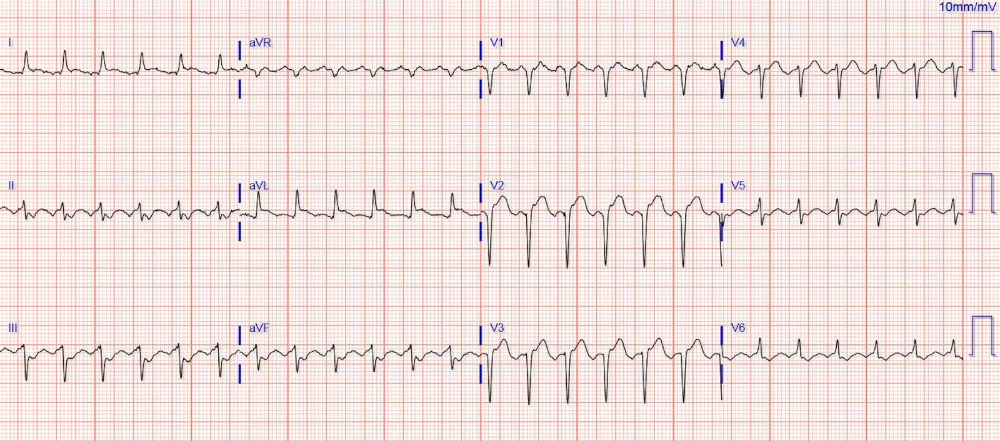
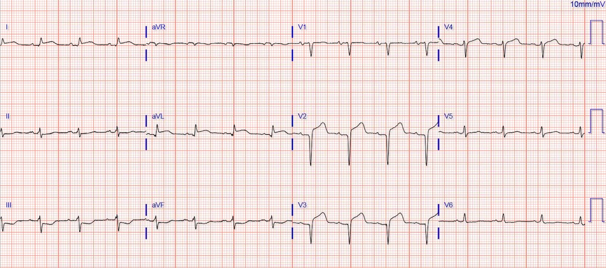
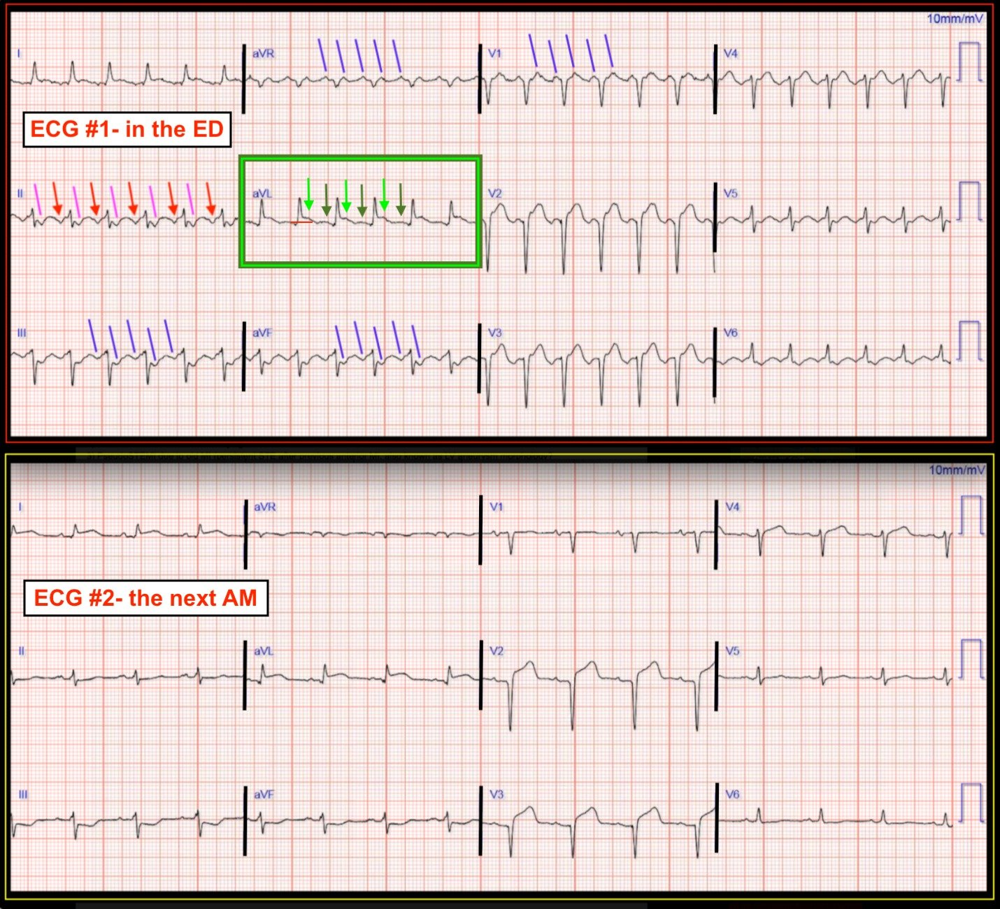

24/09/2018 — Nhịp tim nhanh và ST chênh lên
Bản dịch tiếng Việt của bài "Tachycardia and ST Elevation." – Dr. Smith’s ECG Blog. Giữ nguyên toàn bộ 4 hình ảnh và 1 video của bản gốc.
Ca bệnh này do một người giấu tên gửi đến.
Một bệnh nhân trung niên được chuyển đến khoa cấp cứu (ED) vì nhịp tim nhanh. Anh ấy phủ nhận bất kỳ cảm giác hồi hộp đánh trống ngực nào, nhưng tần số tim liên tục ở mức 150 nhịp/phút. Các dấu hiệu sinh tồn khác bình thường. Bệnh nhân có tĩnh mạch cổ nổi (JVD) và phù chân, nhưng phổi trong và độ bão hòa oxy khi thở khí trời bình thường.
Anh ấy phủ nhận mọi triệu chứng thiếu máu cục bộ điển hình lẫn không điển hình. Tuy nhiên, anh ấy kể rằng đã bị mệt mỏi rõ rệt bắt đầu từ khoảng 5 ngày trước, nhưng hôm nay thực ra đã cảm thấy khá hơn nhiều.
Điện tâm đồ ban đầu:


Đây là:
1) STEMI thật (cấp hoặc bán cấp)?
2) Giả STEMI (pseudoSTEMI) do sóng cuồng nhĩ nền?
3) Giả STEMI do nhồi máu cơ tim cũ (ST chênh lên tồn tại sau nhồi máu cơ tim thành trước trước đây, còn gọi là hình thái phình thất trái)?
Suy nghĩ của bác sĩ: Hình ảnh này gợi ý lo ngại nhồi máu cơ tim do tắc (OMI) thành trước, cụ thể là tổn thương LAD đoạn gần. Có sóng Q ở V1-V3, gợi ý nhồi máu cơ tim thành trước cũ, nhưng sóng T ở V2 và V3 khá cao, gợi ý có một mức độ thiếu máu cục bộ cấp. Ngoài ra, không có sóng T đảo ngược — dấu hiệu sẽ gợi ý nhồi máu cơ tim bán cấp, đã tiến triển hoặc đã tái tưới máu.
Bệnh nhân, với nụ cười thoải mái, một lần nữa phủ nhận mọi triệu chứng.
Cuồng nhĩ có thể bắt chước các dấu hiệu nhồi máu cơ tim trên điện tâm đồ. (Ví dụ, xem ca này, ca này, ca này, những kết quả đọc bằng máy tính sai này, và báo cáo ca bệnh này.)
K. Wang đưa ra bình luận này: “Một ca tuyệt vời. Điều quan trọng, như anh đã làm, là chỉ ra rằng sóng
cuồng nhĩ có thể gây ra các dấu hiệu gợi ý STEMI. Trong bản ghi này,
câu trả lời nằm ở chuyển đạo aVL. Ở đó, phần đầu đoạn ST
cao hơn đỉnh của sóng cuồng nhĩ đứng trước QRS, chứng minh
rằng đoạn ST thực sự chênh lên.”
Để làm rõ điện tâm đồ, bác sĩ cấp cứu đã tiêm metoprolol tĩnh mạch để làm chậm đáp ứng thất. Tuy nhiên, sau đó bệnh nhân bị huyết áp ở ngưỡng thấp giới hạn (dù vẫn hoàn toàn không có triệu chứng). Siêu âm tim tại giường đã được thực hiện:
Có vô động thành trước, thấy rõ nhất trên mặt cắt trục ngắn cạnh ức (PSSA).
Vậy là có nhồi máu cơ tim.
Nhưng là cũ hay mới?
Không có bằng chứng hình thành phình trên siêu âm tim này (thành cơ tim không mỏng); vì vậy, có vẻ đây là nhồi máu cấp hoặc bán cấp.
Nhóm thông tim được kích hoạt. Huyết áp tụt đột ngột trong lúc ở phòng thông tim chuẩn bị chụp mạch, và bệnh nhân đã được sốc điện chuyển nhịp. Sau đó phát hiện tắc LAD đoạn gần và đã được can thiệp.
Troponin lấy ở khoa cấp cứu gần 10 ng/mL, gợi ý tắc bán cấp.
Bản ghi này được ghi vào sáng hôm sau:


Bình luận của Smith:
Đây có phải là hình ảnh được gọi là “phình thất trái” không? –Phình thất trái có thể được phân biệt dựa vào kích thước sóng T, cụ thể là tỷ số T/QRS:
–Phình thất trái có sóng T tương đối nhỏ, thường kèm đảo ngược nhẹ (nông).
–Nhồi máu cơ tim cấp có sóng T dương lớn, nhưng có thể đảo ngược nếu đã tái tưới máu (nông trong trường hợp Wellens kiểu A; sâu trong kiểu B, là giai đoạn tiến triển muộn hơn). Tuy nhiên, sóng Wellens đi sau sóng R, chứ không phải sau sóng QS.
Quy tắc phình thất trái: Nên đặc biệt nghi ngờ phình thất trái, và áp dụng quy tắc này, khi có sóng QS ở bất kỳ chuyển đạo nào từ V1-V4. Sóng QS nghĩa là một sóng lệch âm duy nhất, không có sóng R nào hoặc chỉ có một sóng r rất nhỏ.
Đây là quy tắc:
Nếu có một chuyển đạo trong V1-V4 có tỷ số T/QRS lớn hơn 0,36, thì đó là nhồi máu cơ tim cấp. Nếu nhỏ hơn 0,36, thì đó là bán cấp (trên 6 giờ) hoặc cũ (xem tài liệu tham khảo 1, 2). Trong ca này, tỷ số T/QRS lớn nhất ở V3 là 5/9 = 0,55.
Nếu đây là điện tâm đồ lúc nhập viện, bạn sẽ không muốn nói rằng các sóng QS đó là do nhồi máu cơ tim cũ với ST chênh lên tồn tại (hình thái phình thất trái).
Nhưng bây giờ chúng ta đang ở sau tái tưới máu, vậy điện tâm đồ cho chúng ta biết điều gì?
Rằng có thiếu máu cục bộ tồn tại bất chấp đã tái tưới máu.
Đây là một dấu hiệu tiên lượng xấu. ST chênh lên và sóng T tối cấp ở thời điểm này có thể là thiếu máu cục bộ tồn tại hoặc tắc lại. Nếu trên điện tâm đồ đã có giai đoạn hồi phục xen giữa, thì đó sẽ là tắc lại. Nhưng trong ca này, đoạn ST chênh lên và sóng T tối cấp tồn tại liên tục. Đây là điển hình của hiện tượng “không tái lưu” (no reflow), là hậu quả của việc các mạch máu nhỏ phía hạ lưu bị bít tắc bởi các khối kết tập tiểu cầu–fibrin. Đọc thêm về vấn đề này tại đây:
Clinical value of 12-lead electrocardiogram after successful reperfusion therapy for acute myocardial infarction (Lancet 1997) (Giá trị lâm sàng của điện tâm đồ mười hai chuyển đạo sau điều trị tái tưới máu thành công trong nhồi máu cơ tim cấp)
[Một cách giải thích khác cho sóng T dương tồn tại: viêm màng ngoài tim sau nhồi máu (xảy ra trong nhồi máu cơ tim xuyên thành)].
Tỷ số T/QRS để phân biệt STEMI thành trước với phình thất trái thành trước:
1. Thẩm định (Klein, Shroff, Smith): Electrocardiographic criteria to differentiate acute anterior ST-elevation myocardial infarction from left ventricular aneurysm (Tiêu chuẩn điện tâm đồ để phân biệt nhồi máu cơ tim ST chênh lên thành trước cấp với phình thất trái)
2. Xây dựng (Smith): T/QRS ratio best distinguishes ventricular aneurysm from anterior myocardial infarction (Tỷ số T/QRS phân biệt tốt nhất phình thất với nhồi máu cơ tim thành trước)
Ca bệnh của người giấu tên, tiếp theo
Buổi bình bệnh án tử vong và biến chứng (M and M) của riêng tôi:
Nếu có một “lần sau” tương tự, tôi có thể sẽ thay đổi cách tiếp cận.
Thứ nhất, tôi đã trì hoãn siêu âm tim quá lâu. Lý luận ban đầu của tôi là đây chỉ là một vấn đề về nhịp, và việc kiểm tra phân suất tống máu ở tần số 150 là không đáng tin cậy và sẽ thấp giả tạo. Nếu tôi đã làm siêu âm tim trước khi dùng metoprolol, có lẽ tôi đã thấy có cơ sở hơn để cân nhắc sốc điện chuyển nhịp trước!
Thứ hai, nhìn lại, sốc điện chuyển nhịp lẽ ra đã tốt hơn dùng thuốc, vừa vì huyết động của bệnh nhân bấp bênh, vừa vì nó sẽ làm rõ việc đọc điện tâm đồ. Tôi đã trì hoãn sốc điện vì bệnh nhân trông “quá khỏe” để điều trị bằng điện. Hơn nữa, bệnh nhân có lẽ đã bị cuồng nhĩ hơn 48 giờ, về lý thuyết làm tăng nguy cơ tai biến mạch máu não (CVA) sau chuyển nhịp.
Nhưng đôi khi thay đổi ST sẽ biến mất khi chuyển cuồng nhĩ về nhịp xoang bình thường (NSR), và có thể tránh được chụp mạch vành khẩn. Hoặc, như trong ca này, thay đổi đoạn ST thật sẽ được bộc lộ, và có thể xác định thời điểm chụp mạch vành phù hợp.
Bình luận của Smith:
Tôi đồng ý. Sốc điện chuyển nhịp, rồi đánh giá lại.

==================================
BÌNH LUẬN CỦA TÔI, bởi KEN GRAUER, MD (24/9/2018):
==================================
Một ca rất hay để thảo luận. Tôi sẽ tập trung bình luận vào 2 điện tâm đồ trong ca này, mà để cho rõ, tôi đã đặt cạnh nhau trong Hình 1. Tôi sẽ trình bày thành lời quá trình suy nghĩ trong đánh giá của mình, quá trình đã dẫn tôi đến những kết luận trùng khớp với những gì Dr. Smith đã trình bày chi tiết.


- Điện tâm đồ #1 — cho thấy một SVT (= nhịp nhanh trên thất – SupraVentricular Tachycardia) đều với phức bộ QRS hẹp, và tần số thất ~150/phút. Không có sóng P xoang.
- ĐIỂM THEN CHỐT (PEARL) #1: Sẽ rất hữu ích nếu ghi nhớ chẩn đoán phân biệt của một nhịp SVT đều mà không thấy rõ sóng P xoang. Trên thực tế, khi đáp ứng thất nhanh đến mức này, chẩn đoán phân biệt gồm 4 thực thể: i) Nhịp nhanh xoang (vẫn có thể có, nếu sóng P xoang bị ẩn trong sóng ST-T đứng trước); ii) SVT vào lại (như AVNRT hoặc AVRT); iii) Cuồng nhĩ dẫn truyền AV 2:1; và, iv) Nhịp nhanh nhĩ dẫn truyền AV 2:1. Nắm được danh sách chẩn đoán phân biệt ngắn này giúp việc ra quyết định lâm sàng dễ dàng hơn rất nhiều.
- Nhịp trên điện tâm đồ #1 không phải là nhịp nhanh xoang. Chúng ta biết điều này — vì mặc dù có hoạt động nhĩ, sóng P ở chuyển đạo II lại âm (các mũi tên ĐỎ chéo). Trừ khi đặt sai vị trí điện cực hoặc tim sang phải — sóng P âm ở chuyển đạo II loại trừ khả năng cơ chế xoang.
- ĐIỂM THEN CHỐT (PEARL) #2: Theo kinh nghiệm của tôi, cuồng nhĩ (AFlutter) cho đến nay là rối loạn nhịp hay bị bỏ sót nhất. Cách tốt nhất để tránh bỏ sót chẩn đoán cuồng nhĩ là “Hãy nghĩ đến cuồng nhĩ cho đến khi chứng minh được điều ngược lại” — bất cứ khi nào bạn gặp một SVT đều với tần số gần ~150/phút, mà không thấy rõ sóng P xoang. Nếu bạn thường xuyên tìm cuồng nhĩ trong những trường hợp như vậy — thì bạn sẽ ít có khả năng bỏ sót nó hơn nhiều (Xem ECG Blog #40).
- ĐIỂM THEN CHỐT (PEARL) #3: Bạn gần như có thể chứng minh nhịp trên điện tâm đồ #1 là cuồng nhĩ ngay cả trước khi làm chậm tần số, bằng cách dùng COMPA ĐO (CALIPERS). Đặt compa đo chính xác bằng MỘT NỬA khoảng R-R — rồi xem liệu bạn có thể “dò bước” chính xác ra dẫn truyền AV 2:1 hay không. Nếu được — hãy xem bạn làm được điều đó ở bao nhiêu chuyển đạo. Chúng tôi minh họa cách áp dụng kỹ thuật này trong Hình 1. Sóng lệch âm không phải xoang trước QRS ở chuyển đạo II (mũi tên ĐỎ chéo) cách đều hoàn hảo với một sóng lệch âm có hình dạng tương tự ngay sau QRS (đường HỒNG chéo).
- Các chuyển đạo tốt nhất để tìm sóng cuồng nhĩ trong cuồng nhĩ điển hình thường là các chuyển đạo thành dưới + chuyển đạo aVR và V1 — và trong ví dụ này, bằng chứng rõ ràng về dẫn truyền AV 2:1 được thấy ở tất cả các chuyển đạo này (các đường TÍM chéo). Thực ra sóng cuồng nhĩ cũng thấy được ở phần lớn các chuyển đạo còn lại. Một số ca cuồng nhĩ chỉ thấy sóng cuồng nhĩ ở 1 hoặc 2 chuyển đạo — nhưng bạn thấy rõ dẫn truyền 2:1 ở càng nhiều chuyển đạo — thì bạn càng có thể tự tin hơn vào chẩn đoán của mình mà không nhất thiết phải làm chậm tần số. LƯU Ý: Lý do điện tâm đồ #1 khó có khả năng là nhịp nhanh nhĩ (ATach) là vì nhịp này ít gặp hơn nhiều so với cuồng nhĩ ngoài bối cảnh điện sinh lý (EP) — và vì với dẫn truyền 2:1, điều này đòi hỏi tần số nhĩ ~300/phút, rõ ràng cao hơn tần số nhĩ thường gặp trong nhịp nhanh nhĩ.
Như Dr. Smith đã nhấn mạnh — cuồng nhĩ có thể làm thay đổi đường nền điện tâm đồ, khiến việc đánh giá thay đổi ST-T cấp trở nên cực kỳ khó khăn. Điều này đặc biệt đúng khi có cuồng nhĩ “điển hình”, trong đó có sóng cuồng nhĩ biên độ lớn ở các chuyển đạo thành dưới, cũng như ở các chuyển đạo khác. Vì lý do này, ban đầu tôi không chắc chắn rằng sóng T cao kèm ST có vẻ chênh lên ở các chuyển đạo thành trước của điện tâm đồ #1 là dấu hiệu của một biến cố cấp. Và, mặc dù có phức bộ QS ở chuyển đạo V1,V2 — chỉ với những sóng r khởi đầu rất nhỏ ở V3,V4 của điện tâm đồ #1— những thay đổi hình thái QRS này không phải lúc nào cũng tồn tại trên điện tâm đồ ghi lại trong điều kiện được kiểm soát tốt hơn sau khi tần số đã chậm lại.
- ĐIỂM THEN CHỐT (PEARL) #4: Dù bạn có cố hình dung “nhiễu” từ sóng cuồng nhĩ ảnh hưởng đến hình dạng ST-T ở các chuyển đạo thành trước của điện tâm đồ #1 thế nào đi nữa — vẫn có ≥2mm ST chênh lên ở chuyển đạo aVL (các mũi tên XANH LÁ NHẠT, nằm trong hình chữ nhật XANH LÁ) mà không thể giải thích bằng việc sóng cuồng nhĩ làm biến dạng đoạn ST. Đó là vì chúng ta KHÔNG thấy gì giống sóng cuồng nhĩ xuất hiện ở khoảng cách bằng nửa khoảng R-R tính từ chỗ ST chênh lên ở chuyển đạo aVL (các mũi tên XANH LÁ ĐẬM ở chuyển đạo này). Theo kinh nghiệm của tôi — Chuyển đạo aVL thường là một “chuyển đạo kỳ diệu” cung cấp sự hỗ trợ cần thiết để thuyết phục tôi rằng ST chênh lên nghi ngờ trong các ca mơ hồ là có thật.
- Về lâm sàng — ca bệnh trình bày ở đây hoàn toàn phù hợp với khả năng “nhồi máu cơ tim thầm lặng” xảy ra khoảng 5 ngày trước đó (khi bệnh nhân này ghi nhận “mệt mỏi” rõ rệt) — với nhịp tim nhanh kéo dài và STEMI thành trước có lẽ là diện rộng giải thích cho sự tiến triển dần dần của suy tim phải (ghi nhận tĩnh mạch cổ nổi, phù chân). Tôi coi đây là bằng chứng ủng hộ thêm cho nghi ngờ của mình về STEMI cấp gần đây.
ĐIỂM THEN CHỐT (PEARL) #5: Cách tốt nhất để mài giũa kỹ năng Đọc điện tâm đồ Lâm sàng của bạn — là theo dõi diễn tiến những ca mà ban đầu bạn còn thắc mắc. So sánh điện tâm đồ ban đầu với điện tâm đồ #2, ghi vào sáng hôm sau — cho chúng ta một cơ hội tuyệt vời để làm điều này (Hình 1).
- Lưu ý rằng khi sóng P xoang được tái lập trên điện tâm đồ #2 — các sóng lệch âm kép ở chuyển đạo II (cũng như ở các chuyển đạo khác) đã biến mất.
- Lưu ý ở chuyển đạo aVL, hình dạng và mức độ ST chênh lên tương tự như chúng ta đã nghi ngờ khi đánh giá điện tâm đồ #1 trong lúc cuồng nhĩ. Điều này cũng đúng (dù ở mức độ ít hơn) ở chuyển đạo I.
- Lưu ý sự hiện diện của ST chênh xuống soi gương dạng “hình ảnh phản chiếu” ở từng chuyển đạo thành dưới trên điện tâm đồ #2. Dấu hiệu này đã có trên điện tâm đồ #1 — dù khó hơn nhiều để chắc chắn rằng ST chênh xuống này là thật chứ không chỉ là sự chồng lấp của sóng cuồng nhĩ trên điện tâm đồ ban đầu.
- Lưu ý các phức bộ QS tương tự và tăng tiến sóng R kém, với ST chênh lên thành trước tồn tại sau khi chuyển về nhịp xoang.
Chúng tôi xin CẢM ƠN Dr. Smith đã trình bày ca bệnh rất sâu sắc này!